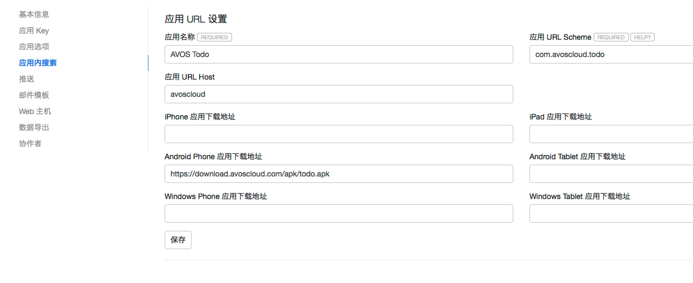
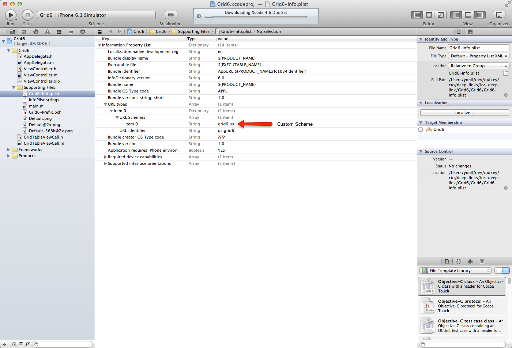
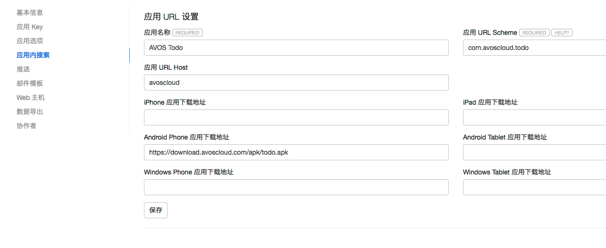
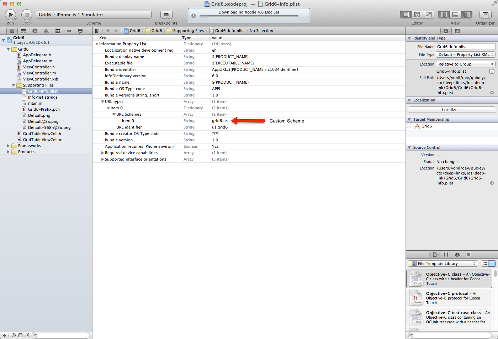

在应用内使用全文搜索是一个很常见的需求。例如一个阅读类的应用，里面有很多有价值的文章，开发者会提供一个搜索框，让用户键入关键字后就能查找到应用内相关的文章，并按照相关度排序，就好像我们打开浏览器用 Google 搜索关键字一样。
但应用内的搜索跟浏览器端的搜索还不大一样。应用内的搜索结果，需要打开的不一定是 Web 页面，更可能是应用内的一个页面。常见的场景是，当用户在移动设备上在网页或应用里搜索关键字之后：
这是效果图，点击 打开应用 即可跳转到具体界面：
为了达到上述目标，我们为开发者提供了现成的应用内搜索组件和让应用响应外部调用链接的 DeepLink 功能。
首先为你的应用选择一个合适的 URL Scheme，然后设置一下你的应用的下载地址等信息。
为了能够使用户直接从搜索结果打开你的应用，开发者需要使你的应用支持外部调用，我们使用 AppURL 来指向一个可以在应用里展现的 Class 数据，格式如下：
{URL Scheme}://{ URL Host}/{ Resource Path}
在组件菜单里，我们添加了一个新菜单「应用内搜索」：

其中最关键的是这几个属性：
myapp.company.com
com.company.myapp
com.avoscloud.todo
com.avoscloud.{appId的前8位}
avoscloud
其他一些属性，都是用于设置你的应用的下载地址，例如：
这些链接都是可选的，当用户没有安装你的应用的时候，无法直接从搜索结果打开应用，将展示这些下载链接给用户下载你的应用。
设置保存之后，你应该可以通过下列链接访问到你的应用信息：
https://{{v2Domain}}/1.1/go/{your uri scheme}/
查看到你的 App URL 应用设置信息。
例如，我们的 todo 应用就是：
https://{{v2Domain}}/1.1/go/com.avoscloud.todo
在设置了应用内搜索，选择了适当的 URL Scheme 之后，你需要选择至少一个 Class 为它开启应用内搜索。开启后，该 Class 的数据将被 LeanCloud 自动建立索引，并且可以调用我们的搜索组件或者 API 搜索到内容。
请注意，启用了搜索的 Class 数据，仍然只能被该应用的认证过的 API 搜索到。其次，搜索结果仍然遵循我们提供的 ACL 机制，如果你为 Class 里的 Object 设定了合理的 ACL，那么搜索结果也将遵循这些 ACL 值，保护你的数据安全。
在 Class 的 其他 菜单里新增了应用内搜索菜单，打开的截图如下：
其中包括三个设定项目：
objectId
createdAt
updatedAt
如果一个 Class 启用了应用内搜索，但是超过两周没有任何搜索调用，我们将自动禁用该 Class 的搜索功能。
数据模板支持 handlebars 模板语法 ，支持的变量（使用两个大括号包起来 {{var}}）包括：
{{var}}
{URL Scheme} : // {URL Host} / {Resource Path}
applinks (Object) 应用内搜索配置对象，包括这些属性：
等等，也就是应用名称，和各种平台应用的下载链接。
以我们的 Todo Demo 为例，我们启用了 Todo 的应用内搜索功能，选择了开放字段content，设定数据模板（消除了css）为：
content
<div class="wrap"> <div class="section section-open"> <div class="section-inner"> <p>Todo Content: {{object.content}}</p> </div> </div> <div class="section section-open"> <div class="section-inner"> <p>已安装 {{applinks.app_name}}？你可以:</p> <p><a href='{{app_uri}}' class="btn">直接打开应用</a></p> </div> </div> <div class="section section-download" > <div class="section-inner"> <p>或者下载应用:</p> <div > <p><a href='{{applinks.iphone_link}}'>iPhone 应用</a></p> <p><a href='{{applinks.ipad_link}}'>iPad 应用</a></p> <p><a href='{{applinks.android_phone_link}}'>Android 手机应用</a></p> <p><a href='{{applinks.android_pad_link}}'>Android 平板应用</a></p> </div> </div> </div>
{{object.content}}
{{applinks.app_name}}
{{app_uri}}
{{applinks.iphone_link}}
{{applinks.ipad_link}}
{{applinks.android_phone_link}}
{{applinks.android_pad_link}}
在 LeanCloud 索引完成数据后，你应当可以通过下列 URL 访问到一条数据，如果在安装了 Todo Demo 应用的移动设备上访问下面这个URL，应该会打开应用展现这条 Todo 的内容:
https://{{v2Domain}}/1.1/go/com.avoscloud.todo/classes/Todo/5371f3a9e4b02f7aee2c9a18
如果直接在 PC 浏览器打开 https://{{v2Domain}}/1.1/go/com.avoscloud.todo/classes/Todo/5371f3a9e4b02f7aee2c9a18?render=true，看到的应该是数据渲染页面，如图：
在设置了和启用了 Class 应用内搜索之后，你需要让你的应用响应搜索结果的 URL 调用。
在 Android 里，我们可以通过为 Activity 注册 intent-filter 来实现。以我们的 Todo Demo 为例，我们想在 CreateTodo 这个 Activity 里面展现搜索出来的某一条 Todo 内容，在 AndroidManifest.xml 注册 intent-filter 配置如下
intent-filter
CreateTodo
AndroidManifest.xml
<activity android:name="com.avos.demo.CreateTodo" > <intent-filter> <action android:name="android.intent.action.VIEW" /> <category android:name="android.intent.category.DEFAULT" /> <category android:name="android.intent.category.BROWSABLE" /> <!-- 处理以"com.avoscloud.todo://avoscloud/classes/Todo/"开头的 URI --> <data android:scheme="com.avoscloud.todo" /> <data android:host="avoscloud" /> <data android:pathPrefix="/classes/Todo/" /> </intent-filter> </activity>
android:scheme
android:host
android:pathPrefix
/classes/{className}/{objectId}
Todo
classes/Todo/
action
android.intent.action.VIEW
DEFAULT
BROWSABLE
接下来在 CreateTodo Activity的 onCreate 方法里我们接收这个 action 并获取 URL 展现数据：
onCreate
Intent intent = getIntent(); // 通过搜索结果打开 if (intent.getAction() == Intent.ACTION_VIEW) { // 如果是VIEW action，我们通过getData获取URI Uri uri = intent.getData(); String path = uri.getPath(); int index = path.lastIndexOf("/"); if (index > 0) { // 获取objectId objectId = path.substring(index + 1); Todo todo = new Todo(); todo.setObjectId(objectId); // 通过Fetch获取content内容 todo.fetchInBackground(new GetCallback<AVObject>() { @Override public void done(AVObject todo, AVException arg1) { if (todo != null) { String content = todo.getString("content"); if (content != null) { contentText.setText(content); } } } }); } }
我们通过 adb 的 am 命令来测试配置是否有效，如果能够正常地调用 CreateTodo页面，则证明配置正确：
adb shell am start -W -a "android.intent.action.VIEW" -d "yourUri" yourPackageName
在 Todo 例子里就是：
adb shell am start -W -a "android.intent.action.VIEW" \ -d "com.avoscloud.todo://avoscloud/classes/Todo/5371f3a9e4b02f7aee2c9a18" \ com.avos.demo
如果一切正常的话，这将直接打开应用并在 CreateTodo 里展现 objectId 为 536cf746e4b0d914a19ec9b3 的 Todo 对象数据数据。
536cf746e4b0d914a19ec9b3
你可以通过编辑应用 information property list，使得你的应用可以处理 URL Scheme。下图展示了如何为你的应用注册 URL Scheme。

需要注意的是，你这里的 URL Scheme 应该和你在我们网站上面设置的 URL Scheme 保持一致。
注册完了 URL Scheme，你还需要实现 application method openURL 。对于 TodoDemo，应该按照如下方法实现。
/* * 与 Android 类似，这里的 url.path 应该是 "com.avoscloud.todo://avoscloud/classes/Todo/5371f3a9e4b02f7aee2c9a18" */ (BOOL)application:(UIApplication *)application openURL:(NSURL *)url sourceApplication:(NSString *)sourceApplication annotation:(id)annotation { NSString *objectId = [url.path lastPathComponent]; AVObject *todo = [AVObject objectWithClassName:@"Todo"]; todo.objectId = objectId; [todo fetchInBackgroundWithBlock:^(AVObject *object, NSError *error) { // 调用展示数据的方法 // code is here }]; return YES; }
下载 应用内搜索模块，解压缩 avossearch.zip，将 libs 下的 avossearch-v{version}.jar 包加入你的 libs 下面。
avossearch.zip
libs
avossearch-v{version}.jar
之后，你需要将 res 下的资源文件夹拷贝并且合并到你工程的 res 目录下，更改资源文件的内容并不影响 SDK 工作，但是请不要改动资源的文件名和文件内资源 ID。
res
应用内搜索组件的资源文件都以 avoscloud_search 开头。
avoscloud_search
打开 AndroidManifest.xml 文件，在里面添加需要用到的 activity 和需要的权限:
<uses-permission android:name="android.permission.INTERNET" /> <uses-permission android:name="android.permission.ACCESS_NETWORK_STATE" /> <application...> <activity android:name="com.avos.avoscloud.search.SearchActivity"> </activity> </application>
注：由于一些 UI 的原因，应用内搜索的最低 API level 要求是 12，如你需要更低的版本支持，请参照文档中的高级定制部分进行开发。
AVSearchQuery searchQuery = new AVSearchQuery("keyword"); SearchActivity.setHighLightStyle("<font color='#E68A00'>");//通过这个方法，你可以像指定html tag一样设定搜索匹配字符的高亮风格 searchQuery.search();//即可打开一个显式搜索结果的Activity
AVSearchQuery 支持排序，通过 orderByAscending 和 orderByDescending 传入要排序的字段，就可以实现按照升序或者降序排序搜索结果。多字段排序，通过 addAscendingOrder 和 addDescendingOrder 来添加多个排序字段。大体上，这块 API 调用跟 AVQuery 是类似的：
AVSearchQuery
orderByAscending
orderByDescending
addAscendingOrder
addDescendingOrder
AVQuery
AVSearchQuery searchQuery = new AVSearchQuery("keyword"); searchQuery.orderByAscending("score"); //根据score字段升序排序。
更复杂的排序功能，例如根据地理位置信息远近来排序，或者排序的字段是一个数组，你想使用数组内的最高值来排序等，都需要通过 AVSearchSortBuilder 来定制。
AVSearchSortBuilder
根据地理信息位置排序：
AVSearchSortBuilder builder = AVSearchSortBuilder.newBuilder(); builder.whereNear("location",new AVGeoPoint(30,30)); searchQuery.setSortBuilder(builder);
根据数组内的最高值来排序，并且如果文档里没有这个值就放到最后：
builder.orderByDescending("scores","max","last"); searchQuery.setSortBuilder(builder);
更多方法请参考 API 文档。
由于每个应用的数据、UI展现要求都有很大的差别，所以单一的搜索组件界面仅仅能够满足较为简单的要求，所以我们将数据接口开放出来以便你能够方便的定制属于你自己的应用内搜索结果页面。
AVSearchQuery search = new AVSearchQuery("test-query"); search.setLimit(100); search.findInBackgroud(new FindCallback<AVObject>() { @Override public void done(List<AVObject> objects, AVException exception) { if (exception == null) { //你可以使用 objects来展现自己的UI for(AVObject o : objects){ //这里可以得到搜索结果和你的应用所对应的AppUrl String appUrl = o.getString(AVConstants.AVSEARCH_APP_URL); //这里可以得到搜索结果对应的语法高亮 Map<String,List<String>> resultHighLights = ((Map<String, List<String>>)) o.get(AVConstants.AVSEARCH_HIGHTLIGHT); } } else { //Exception happened } } } });
你也可以参考 我们的 SearchActivity 来更好的指定你自己的搜索结果页面。
SearchActivity
通过 findInBackgroud 方法做定制查询的话，如果需要分页，你仅仅需要通过多次调用同一个 AVSearchQuery 的 findInBackgroud 即可实现翻页效果，它将返回下一页搜索结果，直到末尾。
findInBackgroud
搜索结果的文档总数可以通过 AVSearchQuery 的 getHits 方法得到。
getHits
在AVSearchQuery中间可以设置query语句来指定查询条件：AVSearchQuery.setQuery(String query)。
AVSearchQuery.setQuery(String query)
传入最简单的字符串查询
AVSearchQuery query = new AVSearchQuery("basic-query");//搜索包含basic-query的值
你也可以通过指定某个特定字段的值或者值域区间
query.setQuery("status:active");//搜索status字段包含active query.setQuery("title:(quick brown)");//搜索status包含quick或者brown query.setQuery("age:>=10");//搜索年龄大于等于10的数据 query.setQuery("age:(>=10 AND < 20)");//搜索年龄在[10,20)区间内的数据
query.setQuery("qu?c*k");//此处?代表一个字符，*代表0个或者多个字符。类似正则表达式通配符
更多更详细的语法资料，你可以参考 Elasticsearch 文档中 Query-String-Syntax 一节。
你可以参照如下代码构造 AVSearchQuery 并获取搜索结果。
AVSearchQuery *searchQuery = [AVSearchQuery searchWithQueryString:@"test-query"]; searchQuery.className = @"className"; searchQuery.highlights = @"field1,field2"; searchQuery.limit = 10; searchQuery.cachePolicy = kAVCachePolicyCacheElseNetwork; searchQuery.maxCacheAge = 60; searchQuery.fields = @[@"field1", @"field2"]; [searchQuery findInBackground:^(NSArray *objects, NSError *error) { for (AVObject *object in objects) { NSString *appUrl = [object objectForKey:@"_app_url"]; NSString *deeplink = [object objectForKey:@"_deeplink"]; NSString *hightlight = [object objectForKey:@"_highlight"]; // other fields // code is here } }];
有关查询语法，可以参考上文 Android 部分的介绍。
对于分页，这里需要特别做出说明。因为每次请求都有 limit 限制，所以一次请求可能并不能获取到所有满足条件的记录。你可以多次调用同一个 AVSearchQuery 的 findObjects 或者 findInBackground 获取余下的记录。另外，hits 属性用于标示所有满足查询条件的记录数。
findObjects
findInBackground
hits
/*! * 符合查询条件的记录条数，由 SDK 自动修改。 */ @property (nonatomic, assign) NSInteger hits; /*! * 当前页面的scroll id，用于分页，可选。 # @warning 如非特殊需求，请不要手动设置 sid。每次 findObjects 之后，SDK 会自动更新 sid。如果手动设置了错误的sid，将无法获取到搜索结果。 * 有关scroll id，可以参考 http://www.elasticsearch.org/guide/en/elasticsearch/guide/current/scan-scroll.html */ @property (nonatomic, retain) NSString *sid;
JavaScript SDK v0.5.1 版本开始支持应用内搜索 API:
var query = new AV.SearchQuery('GameScore'); query.queryString('*'); query.find().then(function(results) { console.log("Find " + query.hits() + " docs."); //处理 results 结果 }).catch(function(err){ //处理 err });
当 query.hasMore() 返回 true 的时候，你可以不停地调用 query.find() 来向下翻页。
query.hasMore()
true
query.find()
如果在不同请求之间无法保存查询的 query 对象，可以利用 sid 做到翻页，一次查询是通过 query._sid 来标示的，你可以通过 query.sid("上次查询的query._sid") 来重建查询 query 对象，继续翻页查询。sid 在 5 分钟内有效。
query._sid
query.sid("上次查询的query._sid")
复杂排序可以使用 AV.SearchSortBuilder：
AV.SearchSortBuilder
var query = new AV.SearchQuery('GameScore'); //假设 scores 是分数组成的数组，根据分数里的平均分倒序排序，并且没有分数的排在最后。 query.sortBy(new AV.SearchSortBuilder().descending('scores','avg', 'last')); query.queryString('*'); query.find().then(function(results) { //处理结果 });
更多 API 请参考 AV.SearchQuery 和 AV.SearchSortBuilder 的文档。
我们提供一个 /1.1/search/select 来做应用内搜索，前提是你参考前面的文档，启用了应用内搜索。
/1.1/search/select
假设你对 GameScore 类启用了应用内搜索，你就可以尝试传入关键字来搜索，比如查询关键字 dennis，限定返回结果 200 个，并且按照 score 降序排序：
dennis
score
curl -X GET \ -H "X-LC-Id: {{appid}}" \ -H "X-LC-Key: {{appkey}}" \ "https://{{v2Domain}}/1.1/search/select?q=dennis&limit=200&clazz=GameScore&order=-score"
返回类似：
{ results: [ { _app_url: "http://stg.pass.com//1/go/com.avoscloud/classes/GameScore/51e3a334e4b0b3eb44adbe1a", _deeplink: "com.avoscloud.appSearchTest://avoscloud/classes/GameScore/51e3a334e4b0b3eb44adbe1a" updatedAt: "2011-08-20T02:06:57.931Z", playerName: "Sean Plott", objectId: "51e3a334e4b0b3eb44adbe1a", createdAt: "2011-08-20T02:06:57.931Z", cheatMode: false, score: 1337 }, …… ], sid: "cXVlcnlUaGVuRmV0Y2g7Mzs0NDpWX0NFUmFjY1JtMnpaRDFrNUlBcTNnOzQzOlZfQ0VSYWNjUm0yelpEMWs1SUFxM2c7NDU6Vl9DRVJhY2NSbTJ6WkQxazVJQXEzZzswOw==" }
查询的参数支持：
skip
limit
sid
q
fields
highlights
*
_highlight
em
clazz
order
-score,createdAt
include
user,comment
sort
返回结果属性介绍：
results
返回结果 results 列表里是一个一个的对象，字段是你在应用内搜索设置里启用的字段列表，并且有两个特殊字段：
_app_url
_deeplink
最外层的 sid 用来标记本次查询结果，下次查询继续传入这个 sid 将翻页查找后 200 条数据：
curl -X GET \ -H "X-LC-Id: {{appid}}" \ -H "X-LC-Key: {{appkey}}" \ "https://{{v2Domain}}/1.1/search/select?q=dennis&limit=200&clazz=GameScore&order=-score&sid=cXVlcnlUaGVuRmV0Y2g7Mzs0NDpWX0NFUmFjY1JtMnpaRDFrNUlBcTNnOzQzOlZfQ0VSYWNjUm0yelpEMWs1SUFxM2c7NDU6Vl9DRVJhY2NSbTJ6WkQxazVJQXEzZzswOw"
直到返回结果为空。
默认情况下， String 类型的字段都将被自动执行分词处理，我们使用的分词组件是 mmseg，词库来自搜狗。但是很多用户由于行业或者专业的特殊性，一般都有自定义词库的需求，因此我们提供了自定义词库的功能。应用创建者可以通过 LeanCloud 控制台 > 组件 > 应用内搜索 > 自定义词库 上传词库文件。
词库文件要求为 UTF-8 编码，每个词单独一行，文件大小不能超过 512 K，例如：
面向对象编程 函数式编程 高阶函数 响应式设计
将其保存为文本文件，如 words.txt，上传即可。上传后，分词将于 3 分钟后生效。开发者可以通过 analyze API（要求使用 master key）来测试：
words.txt
analyze
curl -X GET \ -H "X-LC-Id: {{appid}}" \ -H "X-LC-Key: {{masterkey}},master" \ "https://{{v2Domain}}/1.1/search/analyze?clazz=GameScore&text=反应式设计"
参数包括 clazz 和 text。text 就是测试的文本段，返回结果：
text
{ "tokens" [ { "token":"反应式设计", "start_offset":0, "end_offset":5, "type":"word", "position":0 } ] }
自定义词库生效后，仅对新添加或者更新的文档/记录才有效，如果需要对原有的文档也生效的话，需要在 存储 > 选择对应的 Class > 其他 > 应用内搜索 菜单中点击「强制重建索引」按钮，重建原有索引。
q 的查询走的是 elasticsearch 的 query string 语法。建议详细阅读这个文档。这里简单做个举例说明。
查询的关键字保留字符包括： + - = && || > < ! ( ) { } [ ] ^ " ~ * ? : \ /，当出现这些字符的时候，请对这些保留字符做 URL Escape 转义。
+ - = && || > < ! ( ) { } [ ] ^ " ~ * ? : \ /
可乐
可口 可乐
"lady gaga"
lady gaga
nickename:逃跑计划
nickename:"lady gaga"
nickname:(逃跑计划 OR 夜空中最亮的星)
book.name:clojure OR book.content:clojure
book.\*:clojure
_missing_:title
_exists_:title
上面举例根据字段查询，前提是这些字段在 class 的应用内搜索设置里启用了索引。
qu?ck bro* 就是一个通配符查询，? 表示一个单个字符，而 * 表示 0 个或者多个字符。
qu?ck bro*
?
通配符其实是正则的简化，可以使用正则查询：
name:/joh?n(ath[oa]n)/
正则的语法参考 正则语法。
根据文本距离相似度（Fuzziness）来查询。例如 quikc~，默认根据 Damerau-Levenshtein 文本距离算法来查找最多两次变换的匹配项。
quikc~
例如这个查询可以匹配 quick、qukic、qukci 等。
quick
qukic
qukci
// 数字 1 到 5： count:[1 TO 5] // 2012年内 date:[2012-01-01 TO 2012-12-31] //2012 年之前 {* TO 2012-01-01}
[] 表示闭区间，{} 表示开区间。
[]
{}
还可以采用比较运算符：
age:>10 age:>=10 age:<10 age:<=10
查询可以使用括号分组：
(quick OR brown) AND fox
objectId: 558e20cbe4b060308e3eb36c
createdAt:["2015-07-30T00:00:00.000Z" TO "2015-08-15T00:00:00.000Z"]
updatedAt: [2012-01-01 TO 2012-12-31]
.iso
birthday.iso: [2012-01-01 TO 2012-12-31]
字段名.objectId
player.objectId: 558e20cbe4b060308e3eb36c and player.className: Player
avartar.url: "https://leancloud.cn/docs/app_search_guide.html#搜索_API"
假设你要排序的字段是一个数组，比如分数数组scores，你想根据平均分来倒序排序，并且没有分数的排最后，那么可以传入：
scores
--data-urlencode 'sort=[{"scores":{"order":"desc","mode":"avg","missing":"_last"}}]'
也就是 sort 可以是一个 JSON 数组，其中每个数组元素是一个 JSON 对象：
{"scores":{"order":"desc","mode":"avg","missing":"_last"}}
排序的字段作为 key，字段可以设定下列选项：
asc
desc
mode
min
max
sum
avg
missing
_last
_first
多个字段排序就类似：
[ { "scores":{"order":"desc","mode":"avg","missing":"_last"} }, { "updatedAt": {"order":"asc"} } ]
如果 class 里某个列是 GeoPoint 类型，那么可以根据这个字段的地理位置远近来排序，例如假设字段 location 保存的是 GeoPoint类型，那么查询 [39.9, 116.4] 附近的玩家可以通过设定 sort 为：
GeoPoint
location
[39.9, 116.4]
{ "_geo_distance" : { "location" : [39.9, 116.4], "order" : "asc", "unit" : "km", "mode" : "min", } }
order 和 mode 含义跟上述复杂排序里的一致，unit 用来指定距离单位，例如 km 表示千米，m 表示米，cm 表示厘米等。
unit
km
m
cm
除了 /1.1/search/select 之外，我们还提供了 /1.1/search/mlt 的 API 接口，用于相似文档的查询，可以用来实现相关性推荐。
/1.1/search/mlt
假设我们有一个 Class 叫 Post 是用来保存博客文章的，我们想基于它的标签字段 tags 做相关性推荐，可以通过：
Post
tags
curl -X GET \ -H "X-LC-Id: {{appid}}" \ -H "X-LC-Key: {{appkey}}" \ "https://{{v2Domain}}/1.1/search/mlt?like=clojure&clazz=Post&fields=tags"
我们设定了 like 参数为 clojure，查询的相关性匹配字段 fields 是 tags，也就是从 Post 里查找 tags 字段跟 clojure 这个文本相似的对象，返回类似：
like
clojure
{ "results": [ { "tags":[ "clojure", "数据结构与算法" ], "updatedAt":"2016-07-07T08:54:50.268Z", "_deeplink":"cn.leancloud.qfo17qmvr8w2y6g5gtk5zitcqg7fyv4l612qiqxv8uqyo61n:\/\/leancloud\/classes\/Article\/577e18b50a2b580057469a5e", "_app_url":"https:\/\/leancloud.cn\/1\/go\/cn.leancloud.qfo17qmvr8w2y6g5gtk5zitcqg7fyv4l612qiqxv8uqyo61n\/classes\/Article\/577e18b50a2b580057469a5e", "objectId":"577e18b50a2b580057469a5e", "_highlight":null, "createdAt":"2016-07-07T08:54:13.250Z", "className":"Article", "title":"clojure persistent vector" }, …… ], "sid": null}
除了可以通过指定 like 这样的相关性文本来指定查询相似的文档之外，还可以通过 likeObjectIds 指定一个对象的 objectId 列表，来查询相似的对象：
curl -X GET \ -H "X-LC-Id: {{appid}}" \ -H "X-LC-Key: {{appkey}}" \ "https://{{v2Domain}}/1.1/search/mlt?likeObjectIds=577e18b50a2b580057469a5e&clazz=Post&fields=tags"
这次我们换成了查找和 577e18b50a2b580057469a5e 这个 objectId 指代的对象相似的对象。
577e18b50a2b580057469a5e
更详细的查询参数说明：
_all
likeObjectIds
min_term_freq
min_doc_freq
max_doc_freq
更多内容参考 ElasticSearch 文档。
应用内搜索和 DeepLink 开发指南
在应用内使用全文搜索是一个很常见的需求。例如一个阅读类的应用，里面有很多有价值的文章，开发者会提供一个搜索框，让用户键入关键字后就能查找到应用内相关的文章，并按照相关度排序，就好像我们打开浏览器用 Google 搜索关键字一样。
但应用内的搜索跟浏览器端的搜索还不大一样。应用内的搜索结果，需要打开的不一定是 Web 页面，更可能是应用内的一个页面。常见的场景是，当用户在移动设备上在网页或应用里搜索关键字之后：
这是效果图，点击 打开应用 即可跳转到具体界面：
为了达到上述目标，我们为开发者提供了现成的应用内搜索组件和让应用响应外部调用链接的 DeepLink 功能。
开发步骤
第一步：设置（可选，建议设置）
首先为你的应用选择一个合适的 URL Scheme，然后设置一下你的应用的下载地址等信息。
设置应用内搜索选项
为了能够使用户直接从搜索结果打开你的应用，开发者需要使你的应用支持外部调用，我们使用 AppURL 来指向一个可以在应用里展现的 Class 数据，格式如下：
在组件菜单里，我们添加了一个新菜单「应用内搜索」：

其中最关键的是这几个属性：
myapp.company.com，那么我们要求的 scheme 就是形如com.company.myapp的字符串。例如我们的 Todo Demo 设置的scheme为com.avoscloud.todo。如果你没有域名，那么我们推荐你使用com.avoscloud.{appId的前8位}来作为 Scheme。我们会在保存的时候检测scheme是否冲突。avoscloud，防止跟其他 AppURL 提供商冲突。其他一些属性，都是用于设置你的应用的下载地址，例如：
这些链接都是可选的，当用户没有安装你的应用的时候，无法直接从搜索结果打开应用，将展示这些下载链接给用户下载你的应用。
设置保存之后，你应该可以通过下列链接访问到你的应用信息：
查看到你的 App URL 应用设置信息。
例如，我们的 todo 应用就是：
为 Class 启用搜索
在设置了应用内搜索，选择了适当的 URL Scheme 之后，你需要选择至少一个 Class 为它开启应用内搜索。开启后，该 Class 的数据将被 LeanCloud 自动建立索引，并且可以调用我们的搜索组件或者 API 搜索到内容。
请注意，启用了搜索的 Class 数据，仍然只能被该应用的认证过的 API 搜索到。其次，搜索结果仍然遵循我们提供的 ACL 机制，如果你为 Class 里的 Object 设定了合理的 ACL，那么搜索结果也将遵循这些 ACL 值，保护你的数据安全。
在 Class 的 其他 菜单里新增了应用内搜索菜单，打开的截图如下：
其中包括三个设定项目：
objectId、createdAt、updatedAt三个字段将无条件加入开放字段列表。如果一个 Class 启用了应用内搜索，但是超过两周没有任何搜索调用，我们将自动禁用该 Class 的搜索功能。
数据模板支持 handlebars 模板语法 ，支持的变量（使用两个大括号包起来
{{var}}）包括：(String) 打开应用的 URL，就是前面提到的
{URL Scheme} : // {URL Host} / {Resource Path}。applinks
(Object) 应用内搜索配置对象，包括这些属性：
等等，也就是应用名称，和各种平台应用的下载链接。
(String) 本页面的二维码图片链接，用户可以用扫描器扫描打开该页面。
(Object) 查询出来的 object 对象，默认至少包括：
objectId、createdAt、updatedAt三个属性。其他是你在选择开放的列。以我们的 Todo Demo 为例，我们启用了 Todo 的应用内搜索功能，选择了开放字段
content，设定数据模板（消除了css）为：在 LeanCloud 索引完成数据后，你应当可以通过下列 URL 访问到一条数据，如果在安装了 Todo Demo 应用的移动设备上访问下面这个URL，应该会打开应用展现这条 Todo 的内容:
如果直接在 PC 浏览器打开 https://{{v2Domain}}/1.1/go/com.avoscloud.todo/classes/Todo/5371f3a9e4b02f7aee2c9a18?render=true，看到的应该是数据渲染页面，如图：
第二步：使 App 支持外部调用（可选，仅 DeepLink 需要）
在设置了和启用了 Class 应用内搜索之后，你需要让你的应用响应搜索结果的 URL 调用。
Android 应用支持外部调用
在 Android 里，我们可以通过为 Activity 注册
intent-filter来实现。以我们的 Todo Demo 为例，我们想在CreateTodo这个 Activity 里面展现搜索出来的某一条 Todo 内容，在AndroidManifest.xml注册intent-filter配置如下android:scheme：设置为你为应用选择的 URL Scheme，这里是com.avoscloud.todoandroid:host：设置为你为应用选择的 URL Host，默认为avoscloud。android:pathPrefix：具体的资源路径前缀，搜索结果的URL具体路径都将展现为/classes/{className}/{objectId}，这里的 className 就是Todo，因此路径前缀为classes/Todo/。action：必须设置为android.intent.action.VIEW，并且加入DEFAULT和BROWSABLE的 Category。接下来在
CreateTodoActivity的onCreate方法里我们接收这个 action 并获取 URL 展现数据：我们通过 adb 的 am 命令来测试配置是否有效，如果能够正常地调用
CreateTodo页面，则证明配置正确：在 Todo 例子里就是：
如果一切正常的话，这将直接打开应用并在
CreateTodo里展现 objectId 为536cf746e4b0d914a19ec9b3的 Todo 对象数据数据。iOS 应用支持外部调用
你可以通过编辑应用 information property list，使得你的应用可以处理 URL Scheme。下图展示了如何为你的应用注册 URL Scheme。

需要注意的是，你这里的 URL Scheme 应该和你在我们网站上面设置的 URL Scheme 保持一致。
注册完了 URL Scheme，你还需要实现 application method openURL 。对于 TodoDemo，应该按照如下方法实现。
第三步：在应用内集成搜索组件
Android 集成
导入SDK
下载 应用内搜索模块，解压缩
avossearch.zip，将libs下的avossearch-v{version}.jar包加入你的libs下面。之后，你需要将
res下的资源文件夹拷贝并且合并到你工程的res目录下，更改资源文件的内容并不影响 SDK 工作，但是请不要改动资源的文件名和文件内资源 ID。应用内搜索组件的资源文件都以
avoscloud_search开头。添加代码，实现基础功能
配置 AndroidManifest.xml
打开
AndroidManifest.xml文件，在里面添加需要用到的 activity 和需要的权限:注：由于一些 UI 的原因，应用内搜索的最低 API level 要求是 12，如你需要更低的版本支持，请参照文档中的高级定制部分进行开发。
添加代码实现基础的应用内搜索功能
结果排序
AVSearchQuery支持排序，通过orderByAscending和orderByDescending传入要排序的字段，就可以实现按照升序或者降序排序搜索结果。多字段排序，通过addAscendingOrder和addDescendingOrder来添加多个排序字段。大体上，这块 API 调用跟AVQuery是类似的：更复杂的排序功能，例如根据地理位置信息远近来排序，或者排序的字段是一个数组，你想使用数组内的最高值来排序等，都需要通过
AVSearchSortBuilder来定制。根据地理信息位置排序：
根据数组内的最高值来排序，并且如果文档里没有这个值就放到最后：
更多方法请参考 API 文档。
高级定制指南
由于每个应用的数据、UI展现要求都有很大的差别，所以单一的搜索组件界面仅仅能够满足较为简单的要求，所以我们将数据接口开放出来以便你能够方便的定制属于你自己的应用内搜索结果页面。
你也可以参考 我们的
SearchActivity来更好的指定你自己的搜索结果页面。分页查询
通过
findInBackgroud方法做定制查询的话，如果需要分页，你仅仅需要通过多次调用同一个AVSearchQuery的findInBackgroud即可实现翻页效果，它将返回下一页搜索结果，直到末尾。搜索结果的文档总数可以通过
AVSearchQuery的getHits方法得到。查询语法简介
在AVSearchQuery中间可以设置query语句来指定查询条件：
AVSearchQuery.setQuery(String query)。基础搜索
传入最简单的字符串查询
字段搜索
你也可以通过指定某个特定字段的值或者值域区间
模糊搜索
更多更详细的语法资料，你可以参考 Elasticsearch 文档中 Query-String-Syntax 一节。
iOS 集成
添加代码获取搜索结果
你可以参照如下代码构造 AVSearchQuery 并获取搜索结果。
有关查询语法，可以参考上文 Android 部分的介绍。
对于分页，这里需要特别做出说明。因为每次请求都有 limit 限制，所以一次请求可能并不能获取到所有满足条件的记录。你可以多次调用同一个
AVSearchQuery的findObjects或者findInBackground获取余下的记录。另外，hits属性用于标示所有满足查询条件的记录数。JavaScript 指南
JavaScript SDK v0.5.1 版本开始支持应用内搜索 API:
当
query.hasMore()返回true的时候，你可以不停地调用query.find()来向下翻页。如果在不同请求之间无法保存查询的 query 对象，可以利用 sid 做到翻页，一次查询是通过
query._sid来标示的，你可以通过query.sid("上次查询的query._sid")来重建查询 query 对象，继续翻页查询。sid 在 5 分钟内有效。复杂排序可以使用
AV.SearchSortBuilder：更多 API 请参考 AV.SearchQuery 和 AV.SearchSortBuilder 的文档。
搜索 API
我们提供一个
/1.1/search/select来做应用内搜索，前提是你参考前面的文档，启用了应用内搜索。假设你对 GameScore 类启用了应用内搜索，你就可以尝试传入关键字来搜索，比如查询关键字
dennis，限定返回结果 200 个，并且按照score降序排序：返回类似：
查询的参数支持：
skiplimitsidqfieldshighlights*，也可以是字段列表逗号隔开的字符串。如果加入，返回结果会多出_highlight属性，表示高亮的搜索结果内容，关键字用em标签括起来。clazzorder-score,createdAt逗号隔开的字段，负号表示倒序，可以多个字段组合排序。includeuser,comment的字符串。仅支持 include Pointer 类型。sort返回结果属性介绍：
results：符合查询条件的结果文档。hits：符合查询条件的文档总数sid：标记本次查询结果，下次查询继续传入这个 sid 用于查找后续的数据，用来支持翻页查询。返回结果 results 列表里是一个一个的对象，字段是你在应用内搜索设置里启用的字段列表，并且有两个特殊字段：
_app_url: 应用内搜索结果在网站上的链接。_deeplink: 应用内搜索的程序调用 URL，也就是 deeplink。最外层的
sid用来标记本次查询结果，下次查询继续传入这个 sid 将翻页查找后 200 条数据：直到返回结果为空。
自定义分词
默认情况下， String 类型的字段都将被自动执行分词处理，我们使用的分词组件是 mmseg，词库来自搜狗。但是很多用户由于行业或者专业的特殊性，一般都有自定义词库的需求，因此我们提供了自定义词库的功能。应用创建者可以通过 LeanCloud 控制台 > 组件 > 应用内搜索 > 自定义词库 上传词库文件。
词库文件要求为 UTF-8 编码，每个词单独一行，文件大小不能超过 512 K，例如：
将其保存为文本文件，如
words.txt，上传即可。上传后，分词将于 3 分钟后生效。开发者可以通过analyzeAPI（要求使用 master key）来测试：参数包括
clazz和text。text就是测试的文本段，返回结果：自定义词库生效后，仅对新添加或者更新的文档/记录才有效，如果需要对原有的文档也生效的话，需要在 存储 > 选择对应的 Class > 其他 > 应用内搜索 菜单中点击「强制重建索引」按钮，重建原有索引。
q 查询语法举例
q 的查询走的是 elasticsearch 的 query string 语法。建议详细阅读这个文档。这里简单做个举例说明。
查询的关键字保留字符包括：
+ - = && || > < ! ( ) { } [ ] ^ " ~ * ? : \ /，当出现这些字符的时候，请对这些保留字符做 URL Escape 转义。基础查询语法
可乐。可口 可乐，空格隔开，返回的结果默认按照文本相关性排序，其他排序方法请参考上文中的 order 和下文中的 sort。"lady gaga"，注意用双引号括起来，这样才能保证查询出来的相关对象里的相关内容的关键字也是按照lady gaga的顺序出现。nickename:逃跑计划。nickename:"lady gaga"nickname:(逃跑计划 OR 夜空中最亮的星)book.name:clojure OR book.content:clojure，也可以用通配符简写为book.\*:clojure。_missing_:title。_exists_:title。上面举例根据字段查询，前提是这些字段在 class 的应用内搜索设置里启用了索引。
通配符和正则查询
qu?ck bro*就是一个通配符查询，?表示一个单个字符，而*表示 0 个或者多个字符。通配符其实是正则的简化，可以使用正则查询：
正则的语法参考 正则语法。
模糊查询
根据文本距离相似度（Fuzziness）来查询。例如
quikc~，默认根据 Damerau-Levenshtein 文本距离算法来查找最多两次变换的匹配项。例如这个查询可以匹配
quick、qukic、qukci等。范围查询
[]表示闭区间，{}表示开区间。还可以采用比较运算符：
查询分组
查询可以使用括号分组：
特殊类型字段说明
objectId: 558e20cbe4b060308e3eb36c，不过这个没有特别必要了，你可以直接走 SDK 查询，效率更好。createdAt:["2015-07-30T00:00:00.000Z" TO "2015-08-15T00:00:00.000Z"]或者updatedAt: [2012-01-01 TO 2012-12-31].iso后缀做查询：birthday.iso: [2012-01-01 TO 2012-12-31]字段名.objectId的方式来查询：player.objectId: 558e20cbe4b060308e3eb36c and player.className: Player，pointer 只有这两个属性，应用内搜索不会 include 其他属性。avartar.url: "https://leancloud.cn/docs/app_search_guide.html#搜索_API"，无法根据文件内容做全文搜索。复杂排序
假设你要排序的字段是一个数组，比如分数数组
scores，你想根据平均分来倒序排序，并且没有分数的排最后，那么可以传入：也就是
sort可以是一个 JSON 数组，其中每个数组元素是一个 JSON 对象：排序的字段作为 key，字段可以设定下列选项：
order：asc表示升序，desc表示降序mode：如果该字段是多值属性或者数组，那么可以选择按照最小值min、最大值max、总和sum或者平均值avg来排序。missing：决定缺失该字段的文档排序在开始还是最后，可以选择_last或者_first，或者指定一个默认值。多个字段排序就类似：
地理位置信息查询
如果 class 里某个列是
GeoPoint类型，那么可以根据这个字段的地理位置远近来排序，例如假设字段location保存的是GeoPoint类型，那么查询[39.9, 116.4]附近的玩家可以通过设定 sort 为：order和mode含义跟上述复杂排序里的一致，unit用来指定距离单位，例如km表示千米，m表示米，cm表示厘米等。moreLikeThis 相关性查询
除了
/1.1/search/select之外，我们还提供了/1.1/search/mlt的 API 接口，用于相似文档的查询，可以用来实现相关性推荐。假设我们有一个 Class 叫
Post是用来保存博客文章的，我们想基于它的标签字段tags做相关性推荐，可以通过：我们设定了
like参数为clojure，查询的相关性匹配字段fields是tags，也就是从Post里查找tags字段跟clojure这个文本相似的对象，返回类似：除了可以通过指定
like这样的相关性文本来指定查询相似的文档之外，还可以通过 likeObjectIds 指定一个对象的 objectId 列表，来查询相似的对象：这次我们换成了查找和
577e18b50a2b580057469a5e这个 objectId 指代的对象相似的对象。更详细的查询参数说明：
skiplimitfields_alllikelikeObjectIds参数二者必须提供其中之一。代表相似的文本关键字。likeObjectIdslike参数二者必须提供其中之一。代表相似的对象 objectId 列表，用逗号隔开。clazzincludeuser,comment的字符串。仅支持 include Pointer 类型。min_term_freqmin_doc_freqmax_doc_freq更多内容参考 ElasticSearch 文档。